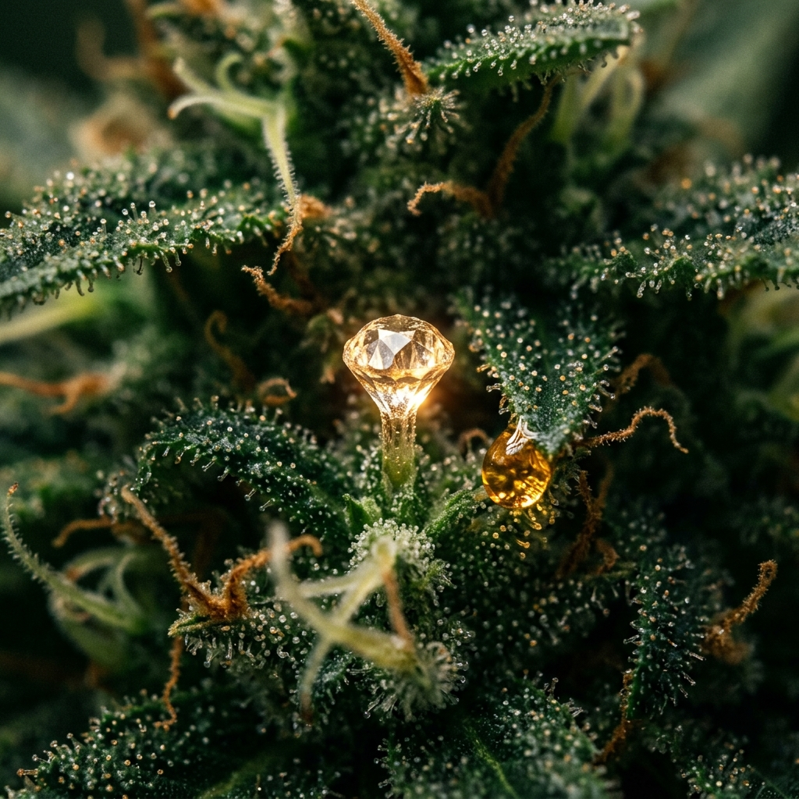

O Cheiro do Alívio: O Guia Definitivo de Terpenos para Novos Pacientes
Como os aromas naturais da Cannabis guiam sua jornada terapêutica e potencializam o CBD e THC através do Efeito Entourage.

Você já parou para cheirar o seu óleo de Cannabis medicinal antes de usá-lo? Se a resposta for sim, você provavelmente notou aromas que variam de cítricos e frescos a terrosos e amadeirados. Esses cheiros não são acidentais—eles são a assinatura dos terpenos, os compostos aromáticos que podem ditar se o seu tratamento vai te dar energia para o trabalho ou uma noite de sono profundo.
Neste guia, vamos desmistificar o mundo dos terpenos e mostrar como eles são os co-pilotos silenciosos do CBD e do THC no chamado Efeito Entourage.
O que são Terpenos e por que o cheiro importa?
Terpenos são óleos essenciais encontrados em quase todas as plantas. É o que faz a lavanda cheirar a lavanda e o limão a limão. Na planta Cannabis Sativa, eles são produzidos nos mesmos tricomas (as 'fábricas' de resina) que produzem o CBD e o THC.
Para o paciente iniciante, entender os terpenos é o segredo para personalizar o tratamento. Enquanto os canabinoides formam a 'base' da terapia, os terpenos são o 'direcionamento'. Eles modulam como os canabinoides interagem com o nosso sistema endocanabinoide, alterando a velocidade de absorção e o tipo de efeito sentido.
Os 5 Terpenos Principais e Seus Benefícios Clínicos
Aqui está o que você precisa procurar no seu Certificado de Análise (COA) ou sentir no aroma natural do seu extrato:
1. Mirceno (Terroso/Amadeirado)
Odor: Terra úmida e cravo.
Benefício: Sedativo e relaxante muscular. É o terpeno ideal para quem sofre de insônia severa ou dores crônicas que impedem o descanso.
2. Limoneno (Cítrico)
Odor: Limão forte e laranja fresca.
Benefício: Antidepressivo e ansiolítico. O limoneno ajuda na melhora do humor e na redução do estresse.
3. Linalol (Floral/Lavanda)
Odor: Flores frescas e lavanda.
Benefício: Calma mental e redução de crises de pânico. Também possui propriedades anticonvulsivantes potenciais.
4. Pineno (Pinho)
Odor: Floresta de pinheiros.
Benefício: Foco mental e dilatação dos brônquios. Ajuda a mitigar a perda de memória de curto prazo que pode ser causada pelo THC.
5. Beta-Cariofileno (Apimentado)
Odor: Pimenta preta e especiarias.
Benefício: Um 'terpeno-canabinoide' que se liga diretamente aos receptores CB2, sendo um anti-inflamatório potentíssimo.
Terpenos e o Efeito Entourage: A Sinergia do Alívio
O conceito de 'Espectro Completo' (Full Spectrum) só faz sentido por causa dos terpenos. Um extrato botânico completo é frequentemente mais eficaz do que o CBD isolado em doses menores. Isso acontece porque os terpenos 'limpam o caminho' para os canabinoides, reduzindo efeitos colaterais e maximizando o alívio terapêutico.
💡 Destaque Técnico: "Os terpenos não são apenas aromas; eles são farmacologicamente ativos. Por exemplo, o pineno inibe a acetilcolinesterase, o que ajuda a manter a memória ativa."
Baixe o Mapa Visual de Terpenos
Explore nosso mapa interativo e aprenda a identificar o melhor perfil para sua condição de saúde na nossa Biblioteca gratuita.
Baixar Guia PDFReferências Bibliográficas
- RUSSO, E. B. Taming THC: potential cannabis synergy and phytocannabinoid-terpenoid entourage effects. British Journal of Pharmacology, v. 163, n. 7, p. 1344-1364, 2011.
- MCPARTLAND, J. M.; RUSSO, E. B. Cannabis and Cannabis Extracts: Greater Than the Sum of Their Parts? Journal of Cannabis Therapeutics, v. 1, n. 3-4, 2001.